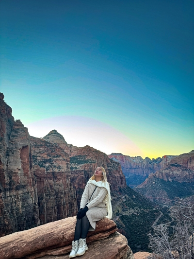

Canyon Over Look Trail

This is the first time i step in utah. It feels like a dream to be in zion national park. I only used to see this on the internet and now I am here. the mountains look bigger than I Imagined. The rocks have many colors under the sun. Everything feels new and unreal to me.
Zion national park has tall red cliffs and quiet trails. Being here makes me calm and helps me think clearly. I like walking and looking up at the high rock walls. The sky looks wide and open above me.